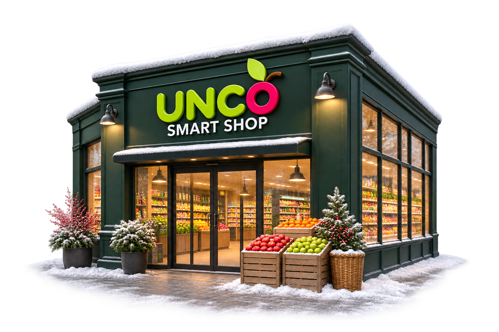

Зимняя полка
Проверьте спрос на цитрусовые, чай, кофе, продукты для супов и горячих домашних блюд. Для быстрых покупок — готовые обеды, выпечку и перекусы из вашего ассортимента.
На что обратить внимание в закупках, какие поводы найти в магазине и городе и о чём рассказать покупателям.
Открыть рекомендацииК вашему календарю. Для вашего магазина.

Зимний ассортимент, точечные закупки и поводы зайти именно к вам. Выберите подходящие идеи и расскажите о них UNCO.
Проверьте спрос на цитрусовые, чай, кофе, продукты для супов и горячих домашних блюд. Для быстрых покупок — готовые обеды, выпечку и перекусы из вашего ассортимента.
Сверьте остатки и сроки годности до следующего заказа. Новинки сначала берите небольшой партией; уточните у поставщика минимальный заказ и возможность дозаказа.
Возвращение к работе и учёбе может менять время визитов. Подготовьте предложение для обеденного перерыва или покупок по дороге домой и проверьте свой график поставок.
Это направления для проверки, а не прогноз спроса. Выберите позиции по запросам покупателей и возможностям своего магазина.
Начните с двух-трёх подходящих категорий. Объём заказа определяйте по своим продажам, остаткам, срокам годности и предзаказам покупателей. Это идеи для выбора ассортимента, а не обязательный список закупок.
Поводом для визита может стать новый товар, дегустация или событие по соседству. Ниже — идеи для вашего плана, а не анонсы уже назначенных мероприятий.
Новый поставщик, местный продукт, сезонная выпечка, возвращение любимого товара или новая партия — повод показать ассортимент.
Что подготовить: фото, цену, дату поступления, объём доступной партии и короткий ответ на вопрос «чем этот товар интересен?».
Пример: «Теперь у нас [товар]. Стоит попробовать, если любите [вкус / способ приготовления]. Цена — [цена], в продаже с [дата]».
Дегустация, знакомство с производителем, день магазина, обновление отдела или новое удобство для покупателей — например, дополнительный способ заказа, если он у вас появился.
Что подготовить: дату и время, условия участия, ответственного сотрудника, запас товара и фотографии. Сначала подтвердите мероприятие, затем анонсируйте его.
Идея предложения: показать продукт в деле — попробовать, сравнить вкусы или узнать простой рецепт.
Посмотрите официальную афишу города, районные мероприятия, выставки, концерты и спортивные встречи. Проверьте дату, место, маршрут гостей и возможные ограничения доступа к магазину.
Что подготовить: удобные перекусы, напитки и продукты для встречи после события — если это подходит вашему ассортименту и потоку покупателей.
Что сообщить UNCO: ссылку на афишу, расстояние до магазина, время работы и ваше предложение. Не называйте магазин партнёром события без договорённости.
Готовый набор для ужина, подборка для обеденного перерыва, товары к выходным или возможность предзаказа могут стать самостоятельным поводом зайти.
Что подготовить: понятный состав, общую цену, срок действия и способ покупки. Рассказывайте только о доступных товарах и услугах.
Расскажите, что появилось в магазине или происходит рядом. Обсудим, как превратить это в публикацию, акцию или локальную рекламу.
Скопируйте сообщение, откройте форму связи UNCO и вставьте текст. Кнопка «Написать в UNCO» открывает сайт с контактной формой; автоматически сообщение не отправляется. Поля этого блока не сохраняются после обновления страницы.
Сначала — дата начала продаж по акции. Затем — подтверждённые сроки поставщика и рекламного партнёра.
Это расчёт назад от начала продаж, а не обязательный график. Если ориентир уже прошёл, уточните доступный заказ и реальный срок у партнёра.
Если напоминание приходится на нерабочий день, перенесите его раньше. Если партнёр меняет дату, обновите её здесь. При импорте в календарь напоминание ставится за четыре дня; показ уведомлений зависит от приложения.
Два события в файле .ics. Подтверждённые даты заменят расчётные ориентиры.
В январе стоит выбрать следующие поводы и проверить, что можно заказать заранее.
Проверить ассортимент: порционные сладости, выпечку, снеки и безалкогольные напитки — с учётом местных мероприятий.
Подготовить рекламу: показать готовое предложение для встречи или праздника; указать цену и срок действия. Карнавальные даты сами по себе не означают официальный выходной.
Уточнить спрос: на финики, крупы, бобовые, муку, напитки и товары для семейной трапезы. Халяльные позиции предлагать только с подтверждённой маркировкой.
Подготовить рекламу: уважительно показать ассортимент для вечерней трапезы. Начало 8 февраля — по расчётам KRM; у общин, следующих наблюдению луны, дата может отличаться на день.
Проверить ассортимент: шоколад, десерты, небольшие подарочные наборы, упаковку и продукты для ужина вдвоём.
Подготовить рекламу: показать два-три варианта с ценами и пригласить за покупками 12–13 февраля. Часы работы сообщить отдельно.
Если поставщик принимает праздничные предзаказы за шесть недель, конец января — время проверить предложения и согласовать дату. Отметка в календаре — повод связаться с партнёром, а не универсальный срок для всех магазинов.
Соцсети, контент и локальная реклама вашего магазина — с командой UNCO.
Обсудить продвижение6 января — в Баварии, Баден-Вюртемберге и Саксонии-Анхальт. 7 и 14 января — культурные поводы, не общегерманские выходные. Рождество 7 января отмечают общины, использующие юлианский календарь; не все православные общины празднуют в этот день.
Даты проверены 17 ноября 2026 года. Рекомендации по ассортименту и рекламе — редакционные идеи UNCO, не прогноз продаж. Уточняйте график работы и доставки своего магазина и партнёров.
Личные записи хранятся только в браузере на вашем устройстве. На сервер они не отправляются; после очистки данных браузера могут исчезнуть. Скачайте план, если хотите сохранить копию.